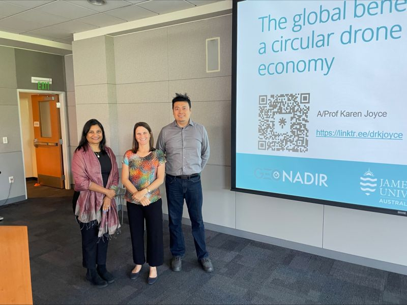
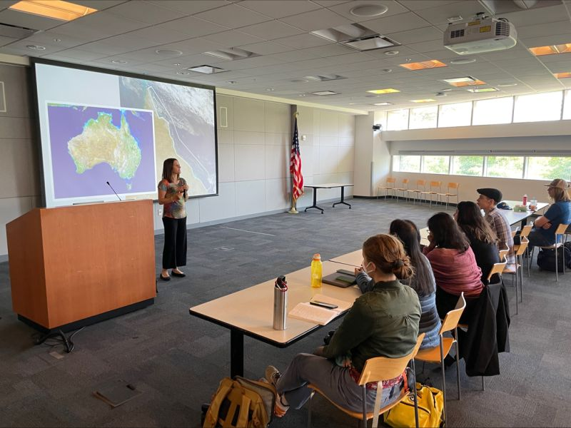

1 minute read

The SJSU GIS & Drone Society extends gratitude to Dr. Karen Joyce for her insightful presentation on the circular drone data economy! Her innovative GeoNadir platform, offering free geoprocessing tools and data hosting, reveals immense collaboration opportunities. The talk illuminated diverse drone data applications, fostering anticipation for future partnerships. 🚁🌐 #dronedata #circulareconomy #collaboration #geoprocessing Cc: Department of Urban and Regional Planning at San Jose State University

Updated: September 22, 2023